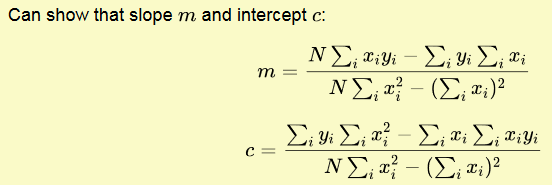
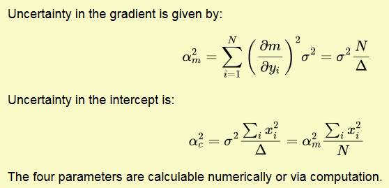

\[\overline{x}=\frac{\sum_i^nx_i}{n}\] \[\sigma^2=\frac{1}{N-1}\sum^N_{i=1}(x_i-\overline{x})^2\] \[\alpha=\frac{\sigma}{\sqrt{N}}\]
Symmetric Error: \[\alpha_Z=|f(\overline{A}+\alpha_A)-f(\overline{A})|\] Asymmetric Error: \[\alpha_Z^+=|f(\overline{A}+\alpha_A)-f(\overline{A})|\;\;\;\;\;\;\alpha_Z^-=|f(\overline{A})-(\overline{A}-\alpha_A)|\]
Note: Always symmetric, valid for small errors only. \[\alpha_Z=|\frac{df(A)}{dA}|\alpha_A\]
Note: MUST NOT USE ON SQUARED VALUES The best estimate of \(Z\) is: \(\overline{Z}=f(\overline A, \overline B)\). \[\alpha_Z^A=f(\overline A+\alpha_A,\overline B)-f(\overline A, \overline B)\] \[\alpha_Z^B=f(\overline A,\overline B+\alpha_B)-f(\overline A, \overline B)\] So the Total Error in \(Z\): \[\alpha_Z=\sqrt{(\alpha_Z^A)^2+(\alpha_Z^B)^2}\]
The best estimate of \(Z\) is: \(\overline{Z}=f(\overline A, \overline B)\). \[\alpha_Z^A=\frac{\partial Z}{\partial A}\cdot\alpha_A\] \[\alpha_Z^B=\frac{\partial Z}{\partial B}\cdot\alpha_B\] So the Total Error in \(Z\): \[\alpha_Z=\sqrt{(\alpha_Z^A)^2+(\alpha_Z^B)^2}=\sqrt{(\frac{\partial Z}{\partial A})^2\cdot\alpha_A^2+(\frac{\partial Z}{\partial B})^2\cdot\alpha_B^2}\]
The weight of each result is: \[w_i=\frac{1}{\alpha^2_i}\] The combined estimate is: \[x_{CE}=\frac{\sum_iw_ix_i}{\sum_iw_i}=\frac{\sum_i\frac{x_i}{\alpha^2_i}}{\sum_i\frac{1}{\alpha^2_i}}\] The inverse of the square of the standard error of the weighted mean is the sum of the weightings: \[\frac{1}{\alpha^2_{CE}}=\sum_i\frac{1}{\alpha^2_i}\]
Chauvenet's criterion: a data point is rejected from a sample if the number of events we expect to be further from the mean than the suspect point, for the sample's mean and standard deviation, is less than half.
The average count \(\overline{N}\), is given by: \[\overline{N}=\mu\cdot t\] where \(\mu\) is the average count rate, and \(t\) is the counting time \[\textrm{Standard Deviation: }\sigma=\sqrt{\overline{N}}\] \[\textrm{Results: }(\overline{N}\pm\sigma)\]
Poisson: \[P(N;\overline{N})=\frac{N^{-N}}{N!}e^{-\overline{N}}\] Gaussian: \[G(x;\overline{x},\sigma)=\frac{1}{\sigma\sqrt{2\pi}}e^{-\frac{(x-\overline{x})^2}{2\sigma^2}}=\frac{1}{\sqrt{2\pi\overline{N}}}e^{-\frac{(N-\overline{N})^2}{2\overline{N}}}\]
If the probability of an event happening (success) is \(p\), and probability of event not taking place (failure) is \(1-p=q\), the probability \(P(r)\) for a total of \(r\) successes in \(N\) attempts is: \[\boxed{P(r)=\frac{N!}{r!(N-r)!}p^r(1-p)^{N-r}}\]
The method of least squares can be used to find the best-fit. For a set of points \((x_i,y_i)\):

